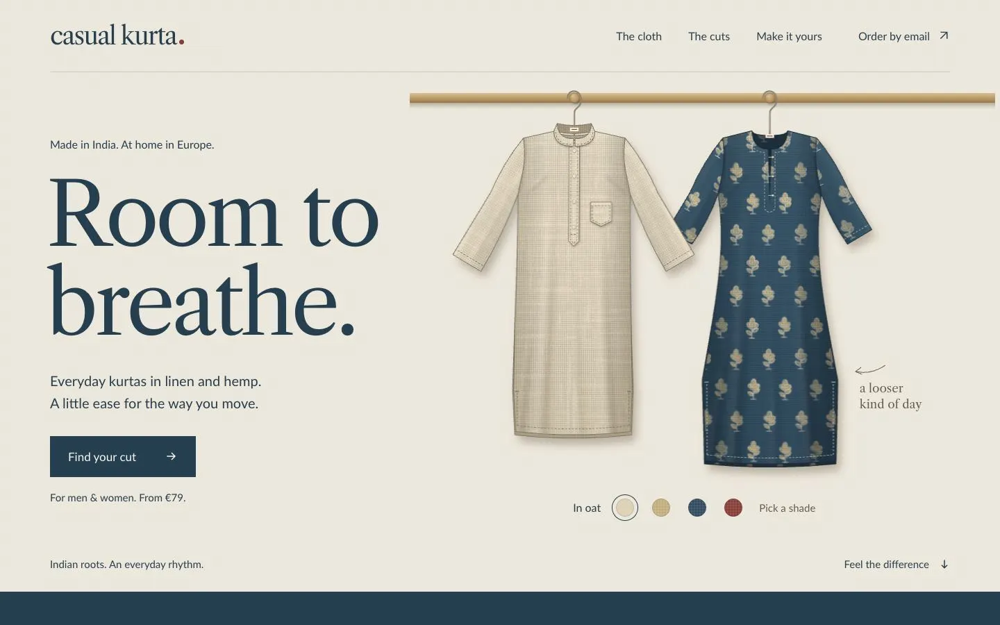
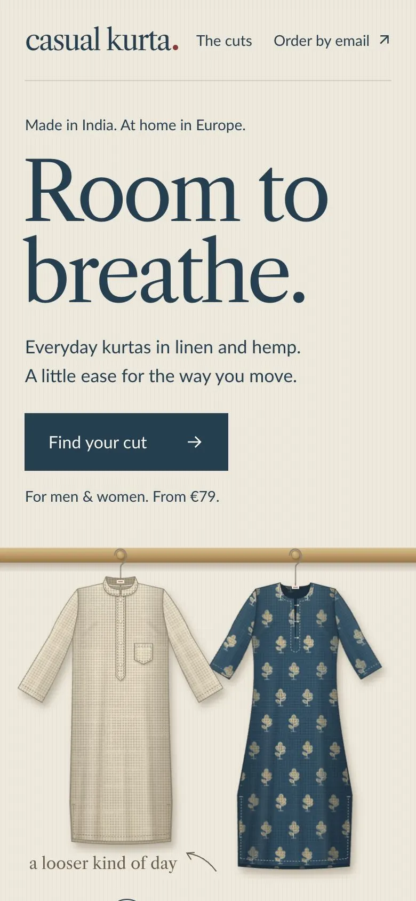
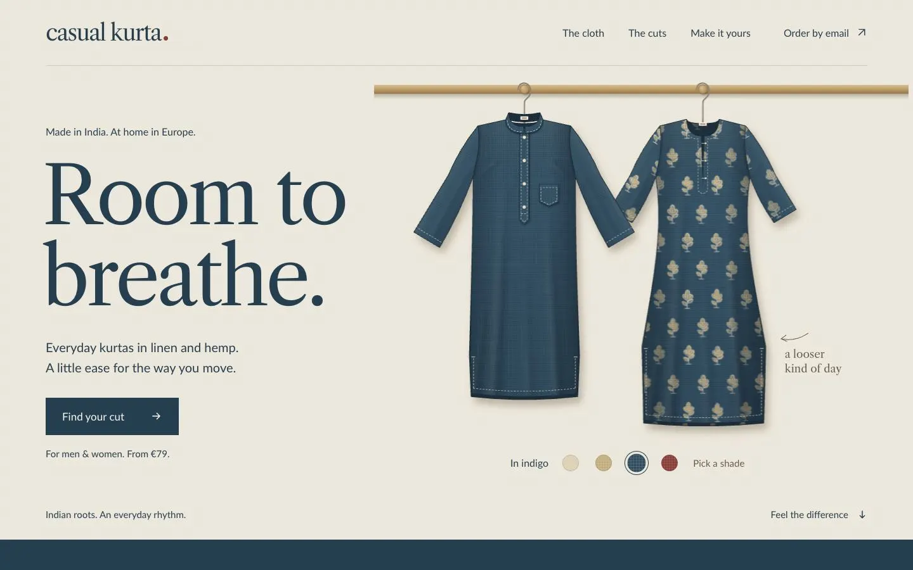
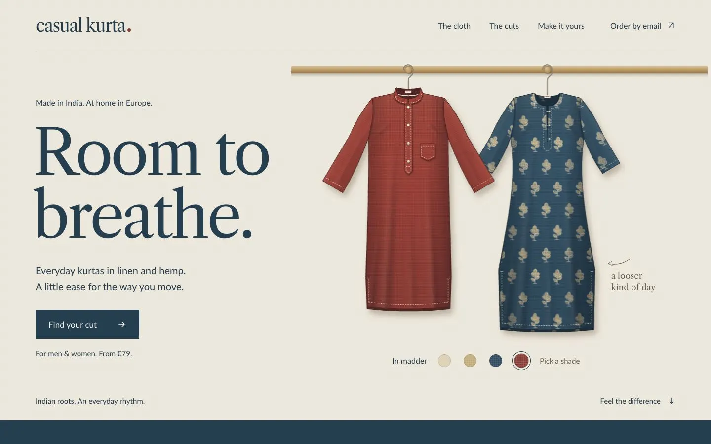

casual kurta
Illustrated kurta storefront with a live colour picker.
A single-page storefront for a small label selling linen and hemp kurtas for men and women, from €79. Orders go by email, so the page is built to get a visitor to pick a cut and write in.
Visit casualkurta.com

Design decisions
- Type: 'Room to breathe.' is set large in Libre Caslon Text in deep navy (#253E50), with Lato for body copy, on a warm oat background (#EEE9DD). The serif carries the brand; Lato keeps the nav and prices plain.
- The garments are illustrations, not photos. Two kurtas hang from a wooden rail on wire hangers, drawn with stitched hems, placket buttons, a patch pocket and a woven texture. The women's kurta has an all-over block-print motif.
- Colour picker: four swatches under the rail (oat, flax, indigo, madder) recolour the men's kurta, and the label beside them updates, for example 'In madder'. The selected swatch gets a ring. The printed kurta stays as it is, so there is always a fixed piece next to the one that changes.
- A small serif note, 'a looser kind of day', with a hand-drawn arrow points at the rail, a quiet aside next to the large headline.
- The cloth section switches to a full navy band. Linen and hemp are drawn as frayed-edge swatches in the same block print, each under a brass hoop that magnifies the weave: open and fine for linen, coarser for hemp.
- Hierarchy: one solid navy button, 'Find your cut', with 'For men & women. From €79.' under it. 'Order by email' closes the nav with an arrow, because email is the only way to buy.
- Mobile: the nav drops to 'The cuts' and 'Order by email', the headline keeps its scale, and the rail runs edge to edge below the button with the note moved under the men's kurta.
On a phone
casual kurta has a single theme, so there is one set of captures.
The flow, step by step



Further down the page